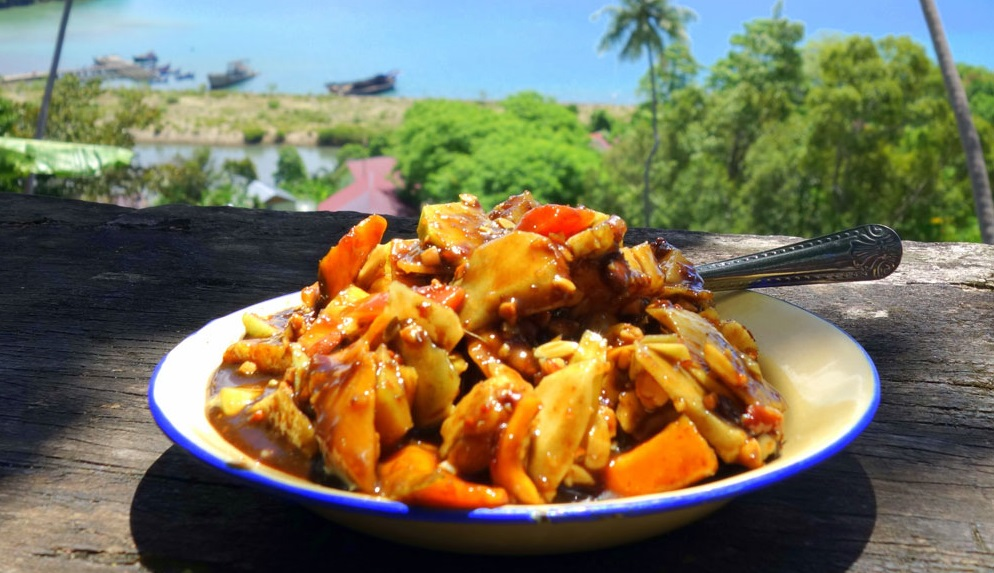

Tugas Projek
Teknik Kolaborasi Pengembangan Perangkat Lunak
- Nama Anggota :
- M.Alimuda Sakti Nst NIM : 161110358
- Nurul Hasanah Siregar NIM : 161110340
- Fais Muzain NIM : 161111914
- Devika Ayusuwari NIM : 161112367
Wilayah Indonesia

- Negara Republik Indonesia adalah negara kepulauan terbesar di dunia
- yang terdiri dari 17.504 pulau, dengan luas lautan: 3.257.483 km²
Kota Sabang
- Terletak di Provinsi Aceh
- Kota Sabang adalah salah satu kota di Aceh, Indonesia. Kota ini berupa kepulauan di seberang utara pulau Sumatra,
- dengan Pulau Weh sebagai pulau terbesar. Kota Sabang merupakan zona ekonomi bebas Indonesia,
- ia sering disebut sebagai titik paling utara Indonesia, tepatnya di Pulau Rondo
Wisata Sabang
- Pantai Iboih

- Pantai Iboih juga sering dikenal dengan Teupin Layeu, terletak di sebelah barat Pulau Weh
- ujung barat Pulau Sumatera. Para wisatawan dapat menikmati keanekaragaman bawah laut
- dengan berbagai macam spesies ikan dan terumbu karang. Selain itu, Anda juga dapat
- menikmati keindahan gunung berapi yang berada di bawah permukaan laut
- Untuk menyewa alat snorkling cukup dengan harga Rp45.000/orang
Wisata Sabang
- Tugu Kilometer 0

- Tugu Kilometer Nol ini terletak di Desa Iboih, Kecamatan Sukakarya, Sabang. Butuh waktu satu jam
- berkendara dari pusat kota Sabang. Tugu kilometer nol diresmikan pada 9 September 1997
- oleh Try Sutrisno yang pada saat itu menjabat wakil presiden RI. Penetapan posisi geografis
- kilometer nol telah diuji oleh Badan Pengkajian dan Penerapan Teknologi menggunakan
- Global Positioning System
Penginapan di Sabang
- Villa Ujong Lembee

- Ujong Lembee di Sabang menyediakan akomodasi dengan
- WiFi gratis, pemandangan laut, serta teras pribadi.
- Ujong Lembee berjarak 36 km dari Banda Aceh.
- Harga per malam sekitar Rp.750.000,-
Penginapan di Sabang
- Hotel Freddies Santai Sumurtiga

- Lokasi penginapan yang sempurna menjadi tambah
- nyaman dengan fasilitas yang diberikan.
- Lokasi: Jl. Bahagia, Skajaya, Sabang
- Harga per malam sekitar Rp.369.600,-
Penginapan di Sabang
- Motel Pulau Weh Paradise

- Salah satu penginapan terbaik di Sabang ini memiliki staff dengan
- kemampuan Bahasa Inggris, Belanda, dan Jerman yang baik.
- Lokasi: Pasir Putih Pulau Weh Banda Aceh, Sabang
- Harga per malam sekitar Rp.245.000,-
Kuliner yang direkomendasikan

- Kuliner merupakan hal penting bagi para pemburu
- dan pencari kuliner di berbagai lokasi wisata,
- beberapa kuliner yang direkomendasikan
- di lokasi wisata Sabang yaitu :
- Mie Jalak dengan harga
- Rp.12.000 saja
Kuliner yang direkomendasikan

- Berwisata ke Sabang belum pas jika tidak mencoba
- kuliner yang satu ini yaitu : Sate Gurita
- Sate ini dinikmati dengan bumbu
- padang atau pun kacang.
- harganya Rp.10.000
Kuliner yang direkomendasikan
- Kuliner yang berbahan dasar buah-buahan di Sabang
- Namanaya yaitu : Rujak 0 kilometer yang berlokasi
- di Tugu 0 kilometer yang berada di Sabang.
- dengan harga Rp.6.000 saja
Kuliner yang direkomendasikan

- Sabang juga terkenal akan minuman yang satu ini
- yaitu : Kopi Sanger minuman yang disukai oleh
- wisatawan kota Sabang dengan harga berkisar
- Rp.15.000 tergantung jenis kopinya.
TERIMA KASIH
GUYS :)
Syntax Highlighting
Powered by Lea Verou's Prism
(function() {
function hanoi(n, a, b, c) {
return n ? hanoi(n - 1, a, c, b)
.concat([[a, b]])
.concat(hanoi(n - 1, c, b, a)) : [];
}
return hanoi(3, 'left', 'right', 'mid')
.map(function(d) {
return d[0] + ' -> ' + d[1];
});
})();